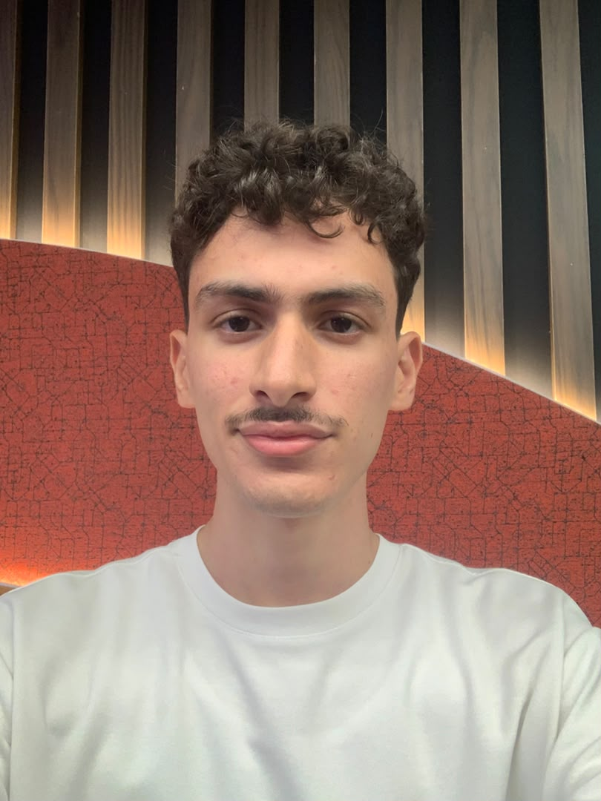
About
Hi, thanks for stopping by! 👋
I am a Master's student in Visual Computing at USTHB (Algiers), currently writing my thesis on hepatic vessel segmentation in radiological imaging. Before that I completed a Bachelor's in Computer Science at the same university, with a graduation project on an optimised architecture for image segmentation.
My current research interests include:
- Medical image segmentation
- Generative models
- 3D reconstruction and video understanding
I'm always open to collaborations and research discussions — especially at the intersection of AI and medicine. Feel free to reach out!
News
-
Aug 2026Attended Deep Learning Indaba, Lagos, Nigeria.
-
Jul 2026Attended ACVSS, Accra, Ghana, and worked on the generative-models project below.
-
2025Completed AI Forge Training, Boeing STEM Center, Algiers.
Selected work
-
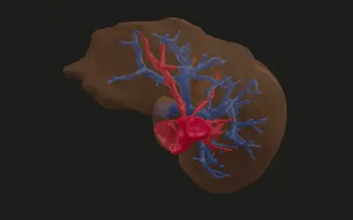
Context-aware hepatic vessel segmentationA 2.5D EfficientNet U-Net for hepatic vessels in CT, using adjacent slices as context, deep supervision and a clDice loss to keep thin vessels connected. -
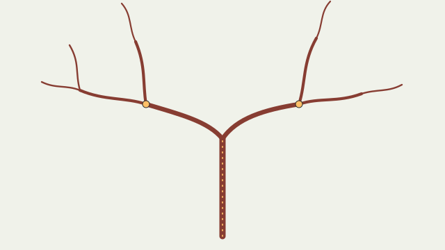
VesselVis — 3D vessel segmentation review toolA web tool for reviewing and correcting 3D liver vessel segmentations, with synchronised 2D slice views, a 3D mesh viewer, and relabelling and island removal written back to the volume. -
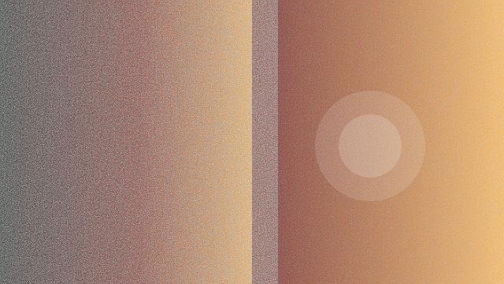
Generative models from the ground upA DDIM sampler with classifier-free guidance built from scratch, followed by ControlNet, LoRA fine-tuning and flow matching on Stable Diffusion 1.5. -
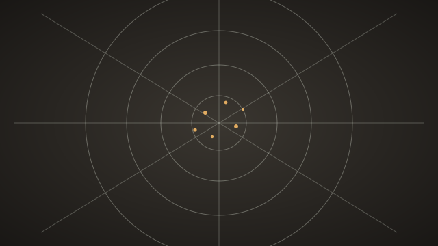
Depth and 3D reconstruction in an operating roomScene geometry and meshes from a single fisheye camera in a medical simulation trauma room, where wide-angle distortion and occlusion break standard pinhole depth pipelines. -
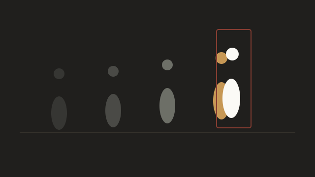
Video understanding and action recognitionA comparison of action recognition approaches on KTH: frozen DINOv2 features with a temporal head, LSTMs, I3D and video transformers, weighed against their cost. -
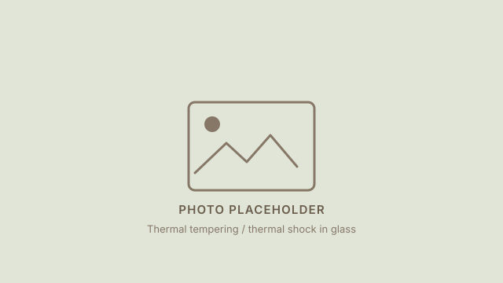
Thermal tempering and thermal shock in glassResidual stress build-up during the thermal tempering of glass insulators, and the conditions under which thermal shock leads to failure. -
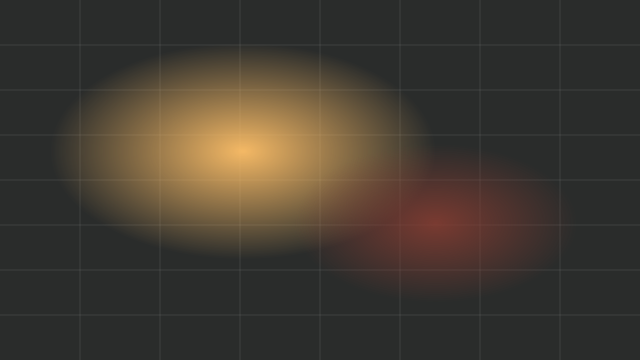
Saliency-inspired vision architectureA vision architecture whose structure follows visual saliency and attention, instead of attending uniformly over a fixed grid of tokens.
Activities and education
-
-
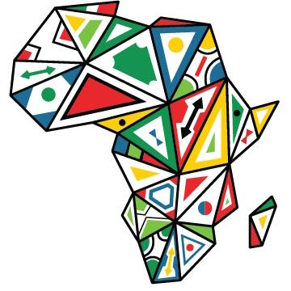
-
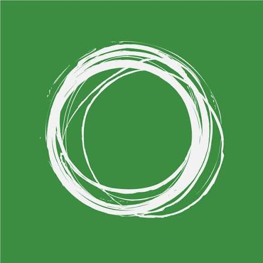
-
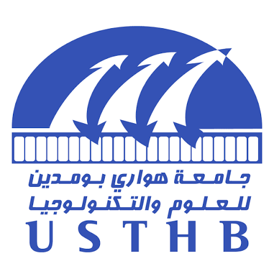
MSc in Visual Computing and BSc in Computer Science